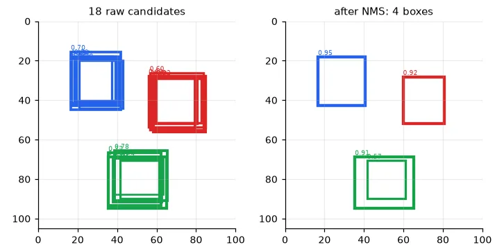
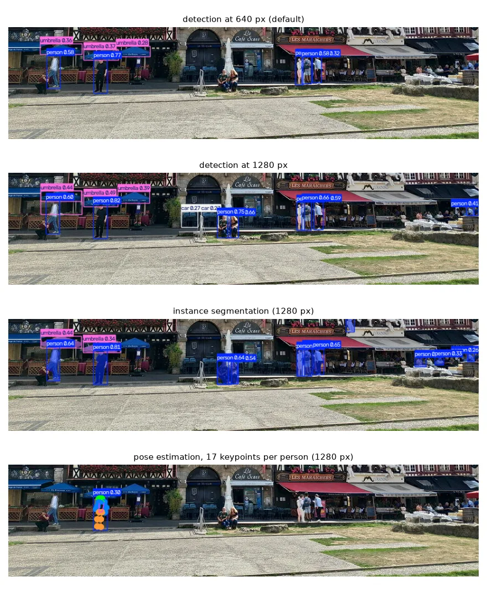
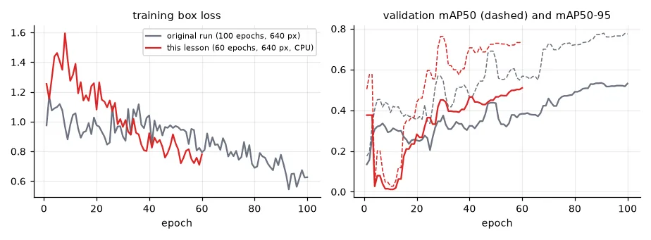
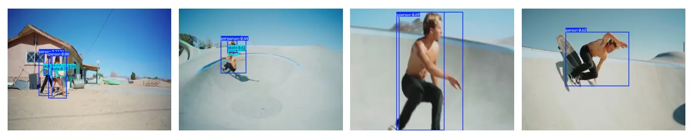

From "what" to "what and where"#
A classifier answers what is in this image. A detector answers what is where: a list of boxes, each with a class and a confidence. That is what a robot needs — the boat must know where the other boat is, the drone where its target is.
YOLO ("You Only Look Once") is the family of real-time detectors most used in robotics. A CNN backbone (lesson 13–14) computes feature maps at three scales; at every cell of every map, a head predicts box coordinates and class scores. The network outputs thousands of candidate boxes per image in one forward pass, and two pieces of geometry turn them into a clean answer.
Intersection over union#
How much do two boxes agree? The IoU is the area of their intersection divided by the area of their union: 1 for identical boxes, 0 for disjoint ones.
def iou(a, b):
"""Intersection over union of boxes in (x1, y1, x2, y2) format. a: (N, 4), b: (M, 4) -> (N, M)."""
x1 = np.maximum(a[:, None, 0], b[None, :, 0])
y1 = np.maximum(a[:, None, 1], b[None, :, 1])
x2 = np.minimum(a[:, None, 2], b[None, :, 2])
y2 = np.minimum(a[:, None, 3], b[None, :, 3])
inter = np.clip(x2 - x1, 0, None) * np.clip(y2 - y1, 0, None)
area = lambda r: (r[:, 2] - r[:, 0]) * (r[:, 3] - r[:, 1])
return inter / (area(a)[:, None] + area(b)[None, :] - inter)
print("IoU of two 10x10 boxes shifted by 5 px:", iou(np.array([[0, 0, 10, 10]]), np.array([[5, 0, 15, 10]]))[0, 0].round(3))
IoU of two 10x10 boxes shifted by 5 px: 0.333
Half-overlapping boxes have an IoU of only 1/3 — it is a strict measure. IoU is used three times in detection: to match predictions to ground truth during training, to remove duplicate predictions (below), and to decide whether a detection counts as correct during evaluation.
Non-maximum suppression#
Neighbouring cells all see the same object and all predict a box for it. NMS keeps the most confident box, removes every other box that overlaps it by more than a threshold, and repeats with what is left:
def nms(boxes, scores, thr=0.5):
"""Greedy non-maximum suppression: keep the best box, drop every box overlapping it by more than thr."""
order = np.argsort(-scores)
keep = []
while len(order):
best, rest = order[0], order[1:]
keep.append(best)
order = rest[iou(boxes[best:best + 1], boxes[rest])[0] <= thr]
return np.array(keep)
rng = np.random.default_rng(0)
centres = np.array([[30, 30], [70, 40], [50, 80]])
boxes = np.concatenate([np.c_[c - 12 + rng.normal(0, 2, (6, 2)), c + 12 + rng.normal(0, 2, (6, 2))]
for c in centres]) # 3 objects x 6 overlapping candidates
scores = rng.uniform(0.3, 0.95, len(boxes))
kept = nms(boxes, scores)
ref = torchvision.ops.nms(torch.tensor(boxes, dtype=torch.float32), torch.tensor(scores, dtype=torch.float32), 0.5)
print("NMS keeps boxes", sorted(kept.tolist()), "| torchvision:", sorted(ref.tolist()))
NMS keeps boxes [5, 6, 12, 15] | torchvision: [5, 6, 12, 15]

Three objects, four boxes: one candidate of the green object was shifted far enough to overlap the best box by less than 0.5 and survived. The IoU threshold is a trade-off — too high and duplicates survive, too low and genuinely overlapping objects (people in a crowd) are merged. YOLO applies NMS per class inside predict; newer versions (YOLOv10, RT-DETR) are trained to avoid duplicates altogether.
A pretrained detector#
YOLOv8n ("nano", 3.2 M parameters) trained on COCO's 80 classes, on the photo of Rouen from lesson 09:
model = YOLO(str(U.CACHE / "yolov8n.pt")) # pretrained on COCO (80 classes); downloaded once
img_path = str(U.path("rouen.jpg")) # 800x576 photo, people are ~25x60 pixels
for conf in (0.09, 0.25, 0.55):
r = model.predict(img_path, conf=conf, verbose=False)[0]
names = [r.names[int(c)] for c in r.boxes.cls]
print(f"conf >= {conf}: {len(names):2d} detections", {k: int(v) for k, v in pd.Series(names).value_counts().items()})
r = model.predict(img_path, conf=0.25, verbose=False)[0]
print("boxes tensor", tuple(r.boxes.xyxy.shape), r.boxes.xyxy.dtype, "| first:",
r.names[int(r.boxes.cls[0])], r.boxes.xyxy[0].round().tolist(), "conf %.2f" % r.boxes.conf[0])
conf >= 0.09: 22 detections {'person': 13, 'umbrella': 4, 'car': 3, 'motorcycle': 1, 'potted plant': 1}
conf >= 0.25: 8 detections {'person': 5, 'umbrella': 3}
conf >= 0.55: 3 detections {'person': 3}
boxes tensor (8, 4) torch.float32 | first: person [146.0, 384.0, 168.0, 442.0] conf 0.77
The confidence threshold is the precision/recall trade-off of lesson 06 again. My class notebook used conf=0.09 to "see more objects": it does find more people, but also three "cars" and a "motorcycle" that are café furniture. There is no correct threshold in general — only one that matches the cost of a miss versus a false alarm for your application.
Small objects need pixels#
The people in this photo are about 25×60 pixels. YOLO resizes every image so its long side is imgsz (640 by default) before the network sees it — here a mild downscale — and the smallest feature map has a stride of 8 pixels:
for size in (640, 1280):
r = model.predict(img_path, conf=0.25, imgsz=size, verbose=False)[0]
people = int((r.boxes.cls == 0).sum())
print(f"imgsz {size}: {len(r.boxes):2d} detections, {people} people")
r_hi = r
imgsz 640: 8 detections, 5 people
imgsz 1280: 15 detections, 9 people
Doubling the input resolution finds the couple sitting by the fountain and the people at the right edge — at 4× the computation. For small, distant objects (boats on the horizon, a drone's target from 30 m) resolution matters more than model size; tiling the image into overlapping crops is the other common fix.
Segmentation and pose#
The same architecture with a different head gives a pixel mask per object, or 17 body keypoints per person:
seg = YOLO(str(U.CACHE / "yolov8n-seg.pt")).predict(img_path, conf=0.25, imgsz=1280, verbose=False)[0]
pose = YOLO(str(U.CACHE / "yolov8n-pose.pt")).predict(img_path, conf=0.25, imgsz=1280, verbose=False)[0]
print("segmentation masks", tuple(seg.masks.data.shape), "| pose keypoints", tuple(pose.keypoints.data.shape))
segmentation masks (14, 928, 1280) | pose keypoints (1, 17, 3)

Training on your own data#
COCO has person but not skateboard-under-a-person-in-a-bowl. For the UFRN assignment I labelled frames of a skateboarding video on Roboflow — 52 images, classes person and skate — and fine-tuned YOLOv8n on a free Colab GPU. The dataset is in the course data (CC BY 4.0), in YOLO format: one text file per image with class x_center y_center width height (normalised), or polygons as here, which Ultralytics converts to boxes.
skate = U.path("skate")
yaml_path = U.CACHE / "skate.yaml"
yaml_path.write_text(f"path: {skate}\ntrain: train/images\nval: valid/images\ntest: test/images\n"
"names:\n 0: person\n 1: skate\n")
print("images: train %d, valid %d, test %d" % tuple(len(list((skate / s / "images").glob("*.jpg")))
for s in ("train", "valid", "test")))
t0 = time.time()
tuned = YOLO(str(U.CACHE / "yolov8n.pt")) # start from the COCO weights: transfer learning
tuned.train(data=str(yaml_path), epochs=60, imgsz=640, batch=8, device="cpu", workers=2, seed=0,
project=str(U.CACHE / "runs"), name="skate", exist_ok=True, plots=False, verbose=False)
print("fine-tuning took %.1f min" % ((time.time() - t0) / 60))
metrics = tuned.val(data=str(yaml_path), split="val", imgsz=640, device="cpu", verbose=False, plots=False)
print("validation: mAP50 %.3f, mAP50-95 %.3f | per class mAP50-95: %s"
% (metrics.box.map50, metrics.box.map, {k: round(float(v), 3) for k, v in zip(["person", "skate"], metrics.box.maps)}))
images: train 36, valid 11, test 5
fine-tuning took 8.2 min
validation: mAP50 0.738, mAP50-95 0.512 | per class mAP50-95: {'person': 0.676, 'skate': 0.349}
mAP, briefly
For each class, sort the detections by confidence and trace the precision–recall curve, counting a detection as correct if its IoU with an unmatched ground-truth box is ≥ 0.5; the area under that curve is the average precision. mAP50 averages it over classes; mAP50-95 averages it again over IoU thresholds 0.50, 0.55, … 0.95, so it also rewards precise boxes. It is the standard COCO metric.
Transfer learning (lesson 14) is what makes 36 images enough: the backbone and the person knowledge come from COCO, and the per-class numbers show it — person reaches 0.68 mAP50-95, the new skate class only 0.35. Skateboards are small, often half-hidden under feet, and appear in 36 images; that class is where more labels would pay off.
orig = pd.read_csv(skate / "original_run_results.csv")
orig.columns = [c.strip() for c in orig.columns]
best = orig.loc[orig["metrics/mAP50-95(B)"].idxmax()]
print("my original run (100 epochs, 640 px, Colab T4): best mAP50-95 %.3f at epoch %d, final mAP50 %.3f"
% (best["metrics/mAP50-95(B)"], best["epoch"], orig["metrics/mAP50(B)"].iloc[-1]))
my original run (100 epochs, 640 px, Colab T4): best mAP50-95 0.534 at epoch 90, final mAP50 0.774


Validation numbers on 11 images jump by ±0.1 between epochs — with so few images, a single box more or less changes the metric. Don't read the third decimal; look at the trend, and keep a test set you never tune on (here 5 frames, which is too few for anything but a sanity check).
Keep API keys out of notebooks
My training notebook downloaded the dataset with Roboflow(api_key="..."), the key written in plain text in a notebook that is one git push or one shared Colab link away from being public. Anyone with the key can read and modify the workspace. Use an environment variable (os.environ["ROBOFLOW_API_KEY"]) or Colab's secrets, and revoke any key that was ever committed.
Exercises#
- Run the pretrained model on a video with
model.track(source="video.mp4")and look at how the tracker keeps identities between frames (the base of my drone-tracking project). - Fine-tune with
imgsz=960and compare theskatemAP. Then tryyolov8s.pt. Which helps the small class more, pixels or parameters? - Implement mAP50 for one class from scratch: match predictions to ground truth greedily by confidence with IoU ≥ 0.5, accumulate precision and recall, and integrate. Compare with
metrics.box.ap50.